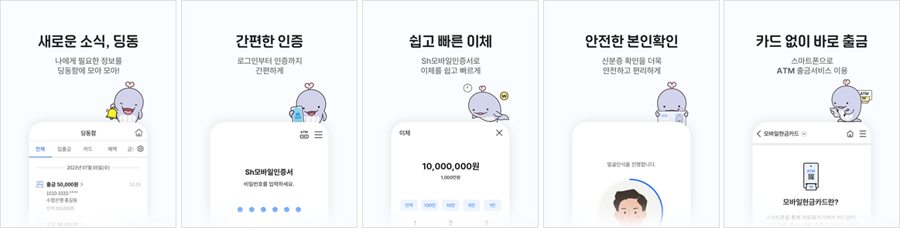
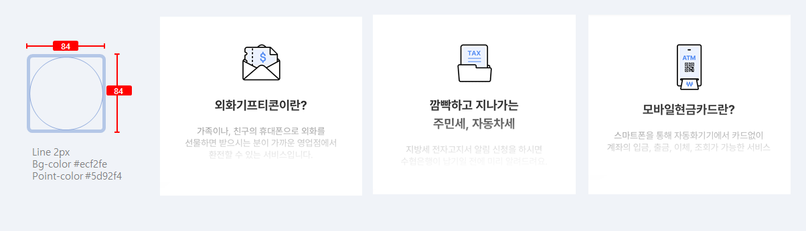

- Foundation
- Typography
- Iconography
- Colors
- Illustration
- Motion
- Validation
- Writing
Illustration
- Definition
- 앱 내의 시각적 콘셉을 표현해주는 역할로 일러스트 이미지를 사용하며,
주로 가이드성/인포성 정보 옆에 시각적 보조 역할로 사용한다.
- Usage
- 수협은행의 친근한 이미지를 전달하기 위해 수협은행에 있는 ‘라온’ 캐릭터를 활용하여 디자인하며,
스플래시이나 로딩같은 대기화면 및 광고의 배너 등에 브랜드 이미지를 전달하기 적합한 화면에 제한적으로
사용할 것을 권장한다.

- Usage
- 제공되는 콘텐츠를 상징적으로 표현할 수 있는 일러스트 이미지를 사용하며,
라인과 포인트 컬러를 통해 표현하는 것을 기준으로 한다.
